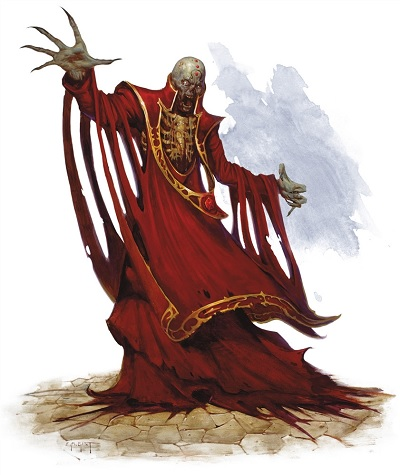

Comment devenir une liche à D&D 5 ?
Une liche est un humanoïde squelettique et décharné dont la peau desséchée ne couvre plus que les os. La décomposition a emporté ses yeux il y a bien longtemps et maintenant une lumière brûle dans ses orbites vides. Elle est souvent vêtue de bijoux ternis par le temps et des restes moisis des beaux habits que la liche portait de son vivant.
Une liche n'est pas un mort-vivant comme les autres. À la différence des zombis et autres squelettes, c'est une créature très puissante, hautement intelligente et douée d'une volonté propre. Mais surtout, une liche est le résultat d'un rituel perpétré par un magicien de haut niveau prêt à tout sacrifier pour obtenir la vie éternelle.
Le processus pour devenir une liche est une opération très coûteuse et surtout très dangereuse, l'échec entraînant la mort, qu'on peut découper en 4 phases :
- Obtenir le secret du rituel
- Fabriquer son phylactère
- Préparer une potion de transformation
- Mourir
Le secret du rituel
Un magicien qui veut se transformer en liche doit avant tout obtenir le secret de cette transformation. Or ce secret est terriblement bien gardé et extrêmement difficile à trouver.
On sait qu'Orcus connait ce secret et qu'il l'a délivré à de nombreuses personnes. C'est d'ailleurs Orcus qui en son temps a enseigné à Vecna le rituel qui permit à ce dernier de se transformer en la plus grande de toutes les liches. Mais rencontrer Orcus n'est pas une mince affaire, et le convaincre de partager ses connaissances ne se fait qu'à condition de lui jurer fidélité en échange.
Certains puissants fiélons ou des dieux maléfiques doivent aussi certainement connaître ce secret, mais là encore, ils ne le délivreront pas à n'importe qui et uniquement sous certaines conditions très strictes.
Il existe également au moins un vieux grimoire, le livre de noire vilénie, qui contient le secret pour se transformer en liche. Mais se procurer cet ouvrage maléfique n'est pas à la portée de tous. D'autres écrits existent peut-être, sûrement même, et y accéder demandera de passer par d'incroyables épreuves.
Quoi qu'il en soit, quiconque obtient le secret de la transformation devient automatiquement d'alignement mauvais.
Le phylactère
Une fois le secret connu, il est impératif de construire son phylactère, qui sera le réceptacle de l'âme du magicien et le garant de son immortalité. Cet objet est une sorte d'amulette qui se présente généralement sous la forme d'une petite boite. Mais des bagues, des sceptres, des couronnes et bien d'autres objets peuvent servir de phylactère. L'objet doit seulement être solide, non constitué de matières organiques, avoir une signification bien particulière pour le magicien, et on doit pouvoir y inscrire des symboles magiques.
Dans l'immense majorité des cas, le magicien construit lui-même son phylactère, mais cela n'est toutefois pas obligatoire. Si un autre magicien remplissant les exigences arrive à être convaincu de le réaliser pour une autre personne, pourquoi pas. Notez simplement que pour cela il faut :
- Être de niveau 17 ou plus
- Sacrifier l'âme d'une créature significative par rapport au niveau du magicien
- Dépenser 500.000 pièces d'or
La fabrication d'un phylactère est toutefois bien plus rapide que celle d'un autre objet magique de cette puissance et ne prend que 10 jours.
La potion de transformation
Une fois le phylactère réalisé, et seulement alors, le moment est venu de préparer la potion de transformation. Comme pour le phylactère, c'est normalement le magicien lui-même qui réalise cette tâche mais, de nouveau, cela n'est pas obligatoire.
Cette mixture, qui est un puissant poison à ingestion, se réalise en seulement 3 jours, au moment d'une pleine lune, mais obtenir ses composantes n'est pas une mince affaire. Voici les ingrédients généralement utilisés, même si certains d'entre-eux peuvent varier d'un rituel à l'autre :
- Une dose d'arsenic
- Une fiole de jus de belladonne
- Une fiole du sang d'un enfant humanoïde tué par de l'arsenic ou de la belladone
- Une dose de venin de wiverne (recueilli dans les 60 derniers jours)
- Une dose de venin d'araignée de phase ou deux doses de venin d'araignée géante (recueilli dans les 30 derniers jours)
- Une fiole du sang d'un enfant humanoïde tué par le poison d'une wiverne ou d'une araignée de phase
- Une fiole du sang d'un vampire
- Sept glandes reproductives d'hétérocères géants, des papillons de nuit (recueilli dans les 60 derniers jours)
- Le cœur intact d'un humanoïde sacrifié moins d'une heure avant l'absorption de la potion
Notez que le cœur n'est pas réellement un des ingrédients de la potion, il servira en fait de récipient, à la place d'une fiole.
Le coût de cette potion est d'environ 9000 pièces d'or, soit l'équivalent de 6 potions du poison de Larmes de minuit, afin de pouvoir provoquer une mort instantanée. Mais les ingrédients étant très particuliers, le magicien devra assurément s'en procurer certains personnellement.
La potion, de couleur noire, doit alors être bue dans les 7 jours qui suivent.
Exécution du rituel
UNE VIE DE LICHE
La vie d'une liche n'est pas de tout repos, car le phylactère devra être régulièrement alimenté d'âmes à l'aide du sort emprisonnement afin de ralentir l'inévitable décomposition de son corps. Et si elle n'y prend pas garde, elle deviendra alors une demi-liche. Mais contrairement à ce que son nom pourrait laisser croire, une demi-liche n'est en rien une liche plus faible que la moyenne, bien au contraire. C'est en fait la forme vers laquelle toute liche finit par tendre un jour ou l'autre, lorsqu'elle ne parvient plus à conserver son intégrité physique. Dans la plupart des cas, une demi-liche est réduite à un crâne, quelques ossements et un tas de poussière.
Avant tout, si jusque-là il était possible d'être aidé par une autre personne pour la réalisation du phylactère et de la potion, à ce stade le candidat doit forcément être un magicien d'alignement mauvais de niveau 17 ou plus, prérequis minimum pour pouvoir prétendre transférer magiquement son âme et son esprit hors de son corps.
Car vient maintenant la partie la plus périlleuse et la plus aléatoire du rituel : parvenir à se relever après avoir absorbé la potion. Le magicien doit en effet effectuer un jet de Constitution DD 17. En cas d'échec, il est définitivement mort, son âme errant on ne sait où. En cas de réussite, son âme parvient à rejoindre le phylactère et la personne se relève sous forme de liche. Le magicien peut alors considérer avoir réussi à atteindre l'éternité, son âme étant maintenant présente à tout jamais dans le phylactère.
Effectivement, dorénavant, si le corps de la liche est brisé suite à un accident ou à une attaque, sa volonté et son esprit s'en échappent, abandonnant le corps inanimé, et 1d10 jours plus tard un nouveau corps se forme à côté du phylactère de la liche. En fait, seule la destruction du phylactère est synonyme de mort définitive pour une liche. C'est la raison pour laquelle toutes les liches cachent le leur dans un endroit extrêmement bien gardé.
Autres classes
On n'a parlé jusqu'ici que de liches qui sont d'anciens magiciens. Mais qu'en est-il des autres classes ? Qui peut prétendre devenir une liche ?
Barde. Rares sont les bardes prêts à passer suffisamment de temps à étudier les arcanes pour pouvoir créer un phylactère, et encore plus rares sont ceux assez maléfiques pour rêver de devenir un mort-vivant. Pourtant, techniquement, un barde pourrait y prétendre.
Clerc. Les clercs n'ont pas les connaissances arcaniques suffisantes pour réaliser le rituel si complexe nécessaire à la transformation en liche. Un dieu mauvais pourrait peut-être momentanément octroyer ce pouvoir à l'un de ses fidèles, mais aucun exemple de ce type n'est connu.
Druide. Comme les clercs, les druides ne maîtrisent pas les secrets des arcanes. De plus, dans leur cas, il est clair qu'aucun dieu ne leur donnerait ce pouvoir qui va à l'encontre de la philosophie d'équilibre prônée par leurs divinités.
Ensorceleur. Les ensorceleurs n'apprennent pas la magie dans des livres ; elle est en eux. Et aucun d'eux ne naît avec un pouvoir si obscur.
Occultiste. Les occultistes maîtrisent la magie des arcanes, mais pas autant que les magiciens. Ils gagnent bien un sort de niveau 9 lorsqu'ils atteignent le niveau 17 dans cette classe, mais ce sort leur est octroyé par leur patron. Celui-ci a donc dans ses mains la possibilité de permettre ou non à son occultiste de réaliser le rituel, comme il a la possibilité de lui enseigner, ou non, le rituel.
Écrit par blueace. Sources : Monster Manual, Curse of Strahd